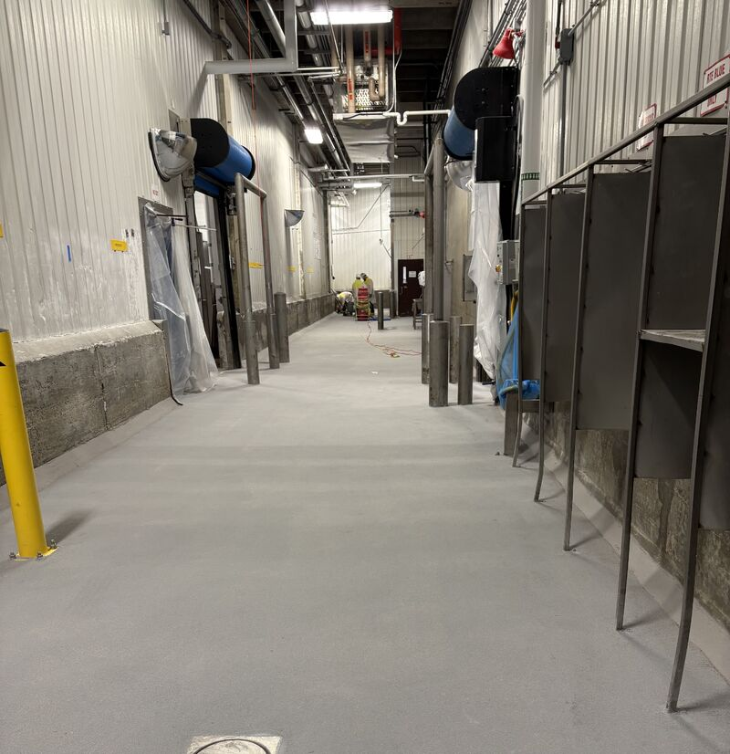
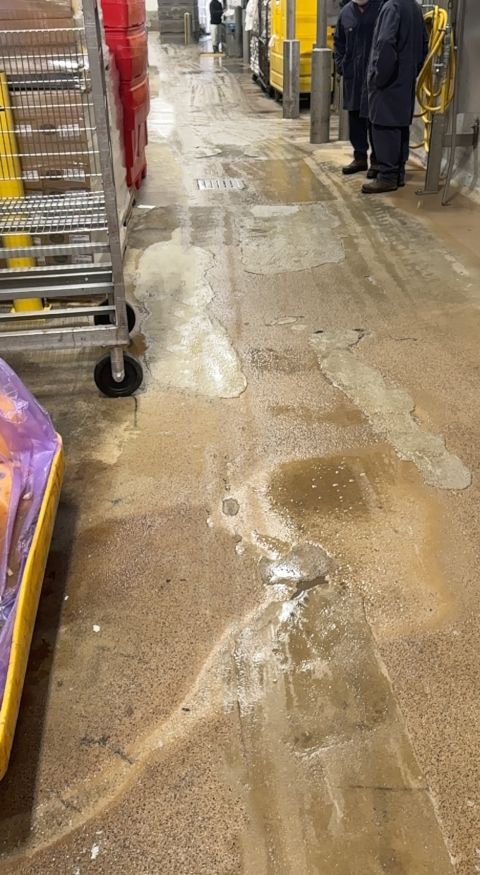
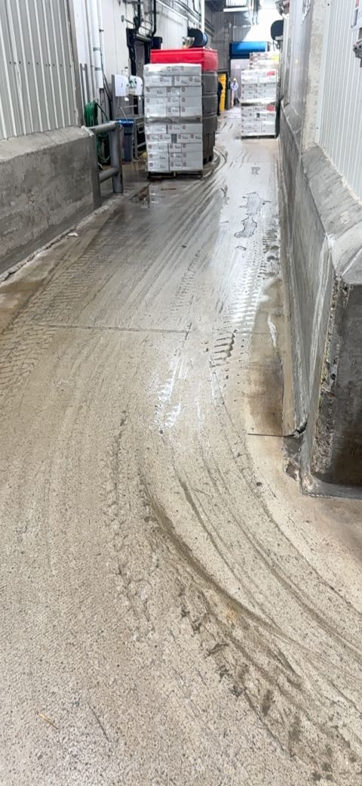
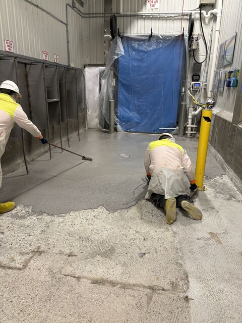
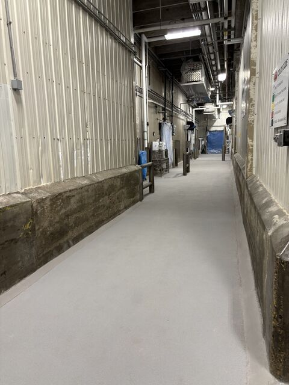

This production corridor had been patched over and over. In a daily washdown food plant, those failing patches are not just ugly. They hold water, collect soil, and become one more sanitation problem the plant has to manage every day.

Patchwork Is a Warning Sign
When the same corridor keeps getting patched, the issue is usually deeper than one worn spot. Delamination, standing water, rough transitions, and traffic wear all start working together until the floor becomes harder to clean and harder to trust.
In a wet production area, that matters. Hot washdowns, heavy traffic, and cleaning chemicals do not leave much room for weak edges or failing repairs.




Built for the Room It Lives In
Our crew prepped the area down to sound substrate and installed SaniCrete STX 3/8 inch cementitious urethane from start to finish. The goal was not to hide the old patches. It was to replace them with a floor built for washdowns, traffic, moisture, and chemical exposure.
The payoff is a corridor the plant can clean, use, and stop worrying about.